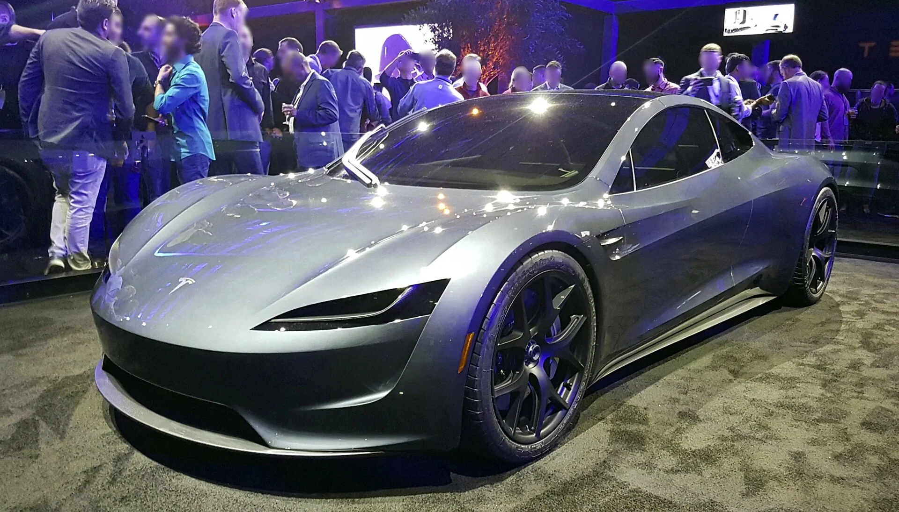

Tesla’nın yeni Roadster’ı, uzun süredir ertelenen bir elektrikli spor otomobil projesi. 15 Ekim 2026’daki tanıtımda aracın rampadan yükselip havada döndüğü bir gösterim sunuldu. BBC’nin haberine göre araç, SpaceX’in geliştirilmesine katkı verdiği itki jetleriyle sergilendi. Bu, otomobilin normal trafikte uçabildiğini ya da üretim sürümünün aynı özelliklere sahip olacağını kanıtlamıyor.
En son ne oldu?
BBC’nin 16 Ekim tarihli haberinde Roadster’ın rampadan çıkıp havada döndüğü ve hava jetleriyle indiği gösterim anlatılıyor. Reuters da tanıtımı ve SpaceX itki sistemini haberleştirirken üretim beklentisinin 2028’e kaldığını bildirdi. Dolayısıyla en güncel gelişme, teslimatların başlaması değil, yeni prototipin gösterilmesi ve üretim için ileri bir takvim açıklanmasıdır.
Tesla CEO’su Elon Musk gösteri sırasında Roadster’ın alışılmadık yeteneklerini öne çıkardı. Ancak sahne gösterisi; bağımsız performans testi, seri üretim onayı veya kamuya açık yollarda uçuş izniyle aynı şey değildir. Araç, otomobil olarak tanıtılsa da havada manevra iddiası ayrıca mühendislik ve düzenleme soruları doğuruyor.
Performans rakamları: hedef ile ölçüm arasındaki fark
Tesla’nın Roadster ürün sayfasında yer alan performans rakamları şirketin açıkladığı hedeflerdir. Önceki Roadster tanıtımından beri dolaşımda olan bu değerler, son gösteride bağımsız olarak doğrulanmış seri üretim otomobil verileri olarak değerlendirilmemeli:
- 0–60 mil/saat (yaklaşık 0–97 km/s): 1,9 saniye olarak ilan edilen hedef.
- Azami hız: 250 mil/saatin (yaklaşık 402 km/s) üzerinde olacağı iddiası.
- Menzil: Tek şarjla 620 mil (yaklaşık 1.000 km) hedefi.
Bu rakamlar üretim modelinin ölçülmüş sonuçları değil, üretici tarafından açıklanmış değerlerdir. Son Roadster için ağırlık, batarya kapasitesi, menzil ölçüm standardı, şarj süresi ve itki sistemiyle donatılmış sürümün performansı konusunda aynı açıklıkta, doğrulanabilir bir teknik föy bulunmadan bu verileri kesin özellik gibi sunmak doğru olmaz.
SpaceX itki jetleri ne anlama geliyor?
Tanıtımdaki gösteri, tekerleklerle yol alan bir otomobilin kısa süreli havalanıp yön değiştirmesini sergiliyor. İtki jetleri araca dikey kuvvet ve havada kontrol sağlayabilir; fakat bunun bedeli kütle, enerji veya basınçlı gaz gereksinimi, ısı ve gürültü, güvenlik mesafesi ve arıza durumunda kontrol gibi ek tasarım sorunlarıdır. Şirketin gösterdiği prototip, bu sistemin günlük kullanıma hazır olduğunu tek başına göstermez.
“Uçan araba” sözü de burada dikkatle kullanılmalı. BBC’nin haberinde de vurgulandığı gibi, gösterideki kısa hava manevrası, yolculu bir hava aracı gibi kalkış yapma veya halka açık yollarda ve hava sahasında kullanım izni anlamına gelmiyor. Havacılık ve trafik mevzuatı, sertifikasyon, yolcu güvenliği ve acil iniş koşulları ayrıca çözülmeli.
2028’de üretim: kesin teslim tarihi değil
Reuters’ın 16 Ekim 2026 tarihli haber başlığı, üretimin 2028’den önce beklenmediğini belirtiyor. Bu tarih bile teslimat garantisi değil; geliştirme, test, onay ve üretim ölçekleme süreçlerine bağlı bir beklenti. Roadster’ın ilk kez 2017’de tanıtılmasından bu yana takvimin birkaç kez değişmiş olması, verilen tarihleri kesinleşmiş satış ve teslimat tarihi gibi aktarmamayı gerektiriyor.
Şimdilik en güvenilir özet şu: Ortada yeni bir Roadster prototipinin tanıtımı ve iddialı performans vaatleri var; ancak nihai teknik özellikler, seri üretim takvimi ve bu sıra dışı itki sisteminin yasal kullanım koşulları kesinleşmiş tüketici ürünü bilgileri olarak görülmemeli.
Kaynaklar
- Tesla. Roadster – Electric Sports Car. Üreticinin ürün sayfası; performans rakamları Tesla’nın kendi beyanlarıdır. Tesla Roadster.
- Reuters (16 Ekim 2026). “Tesla’s new Roadster turns in air with SpaceX thrusters, won’t land until 2028.” Tanıtım ve üretim takvimi hakkında haber. Reuters.
- BBC News (16 Ekim 2026). “Did Tesla just unveil a flying car?” Tanıtım gösterimi ve uçan otomobil nitelemesinin sınırları hakkında haber. BBC.
- Görsel: Smnt, Tesla roadster 2020 prototype. Wikimedia Commons, CC BY-SA 4.0. Görsel 2017’de sergilenen prototipten; yeni tanıtım aracını temsil etmiyor. Dosya sayfası ve lisans.
Kaynaklar 8 Kasım 2026 tarihinde kontrol edildi. Üretici iddiaları bağımsız ölçüm sonuçlarından ayrı tutulmuştur.